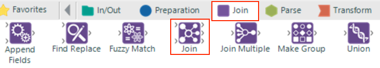

.png)
Now that we’ve discussed joins in detail let’s see how we can utilise these within our Alteryx workflow.
In our workflow we currently have a data source that details everything relating to orders that have been placed with our ecommerce company including what was purchased and when but it doesn’t tell us anything about price of the product the customer bought. This is contained in our Products data source and we will need this to calculate sales later in the workflow. Alteryx comes with a collection of join tools that will allow us to blend the two data sources together to create our desired data set.
In this section we will use the Join Tool, which can be found within the Join tab of the tool pallet.
Step 1:
Drag the Join tool from the tool pallet and drop it onto the workspace. On the left hand side of the tool you will see two inputs labelled “L” (left) and “R” (right). Connect the output of the date filter in the orders stream to the “L” input of the join tool and the output from the filter in the Products stream to the “R” input of the join tool.
Step 2:
Now we’ve connected our two data streams to the join tool we need to tell the join tool under which condition to join the two inputs. In this case the condition to join on is when the "ProductID" field is equal the to the "Product_ID". These are obviously named slightly differently but we know they both relate to the same thing. In the configuration window select these two fields under “Join by Specific Fields”.

Step 3:
After the two data sources are joined we will have two fields (ProductID and Product_ID) that both contain the same information so lets remove the Product_ID field in the configuration window of the join tool.
The join is now ready. On the output of the Join tool you can see there are three outputs “L”, “J” & “R”. The output of each node is as follows:
Step 4:
In our case we are only interested in records where there is a relationship between both data sources. Add a browse tool to the “J” output and run to see the what the two data sets have been blended to combine.